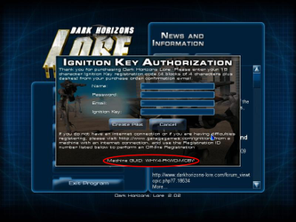
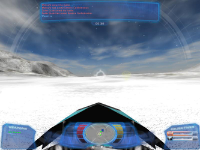
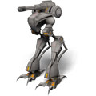

Dark Horizons: Lore
Dieser Artikel wurde für die folgenden Ubuntu-Versionen getestet:
Ubuntu 16.04 Xenial Xerus
Zum Verständnis dieses Artikels sind folgende Seiten hilfreich:
Dark Horizons: Lore  ist eine im 22. Jahrhundert angesiedelte Mischung aus Shooter und Mechspiel. Man kann zwischen den zwei Fraktionen Federated States und Eastern Confederation, welche über die Kontrolle des Planetens kämpfen, und unterschiedlichen Mechanized Assault Vehicles (MAV) wählen. Diese sind mit unterschiedlichen Waffensystemen und Fähigkeiten ausgerüstet. Dem Piloten stehen verschiedene Spielmodi zur Verfügung. Multiplayer ist seit 2008 nicht mehr möglich. Das Spiel wurde nach einem Update unter dem Titel Dark Horizons Lore: Invasion veröffentlicht. Seit 2007 steht das Spiel als Freeware zur Verfügung.
ist eine im 22. Jahrhundert angesiedelte Mischung aus Shooter und Mechspiel. Man kann zwischen den zwei Fraktionen Federated States und Eastern Confederation, welche über die Kontrolle des Planetens kämpfen, und unterschiedlichen Mechanized Assault Vehicles (MAV) wählen. Diese sind mit unterschiedlichen Waffensystemen und Fähigkeiten ausgerüstet. Dem Piloten stehen verschiedene Spielmodi zur Verfügung. Multiplayer ist seit 2008 nicht mehr möglich. Das Spiel wurde nach einem Update unter dem Titel Dark Horizons Lore: Invasion veröffentlicht. Seit 2007 steht das Spiel als Freeware zur Verfügung.
|  |  |
| Machine GUID | Spieleszene |
Installation¶
Das Spiel von garagegames.com  , holarse-linuxgaming.de oder ausgamers.com herunterladen und ausführbar [1] machen. Anschließend die Installation einleiten [2]:
, holarse-linuxgaming.de oder ausgamers.com herunterladen und ausführbar [1] machen. Anschließend die Installation einleiten [2]:
64-Bit¶
_POSIX2_VERSION=199209 linux32 ./dhli_v2_0_2.sh.bin
Da die Server abgeschaltet sind kann das Spiel nicht online aktiviert werden. Deshalb kann die Produktregistrierung nur über einen kleinen Umweg erreicht werden. Man startet das Dark Horizons und ruft die Registrierung auf. Daten können nicht eingegeben werden - jedoch benötigt man die im unteren Bereich eingeblendete einzigartige Machine GUID. Diese notieren für die Registrierung.
Produktregistrierung¶
Man ruft die Seite Offline Product Registration auf. Nachdem man in der Dropdown-Liste als Plattform Linux ausgewählt hat gibt man als
Registration ID die Machine GUID vom Spiel ein und den
Ignition Key:
RYD6-B2AM-6K6C-MRY4
des Publishers . Die Datei ignition herunterladen und in das Installationserzeichnis kopieren. Hier die vorhandene Datei ersetzen.
Das Spiel kann mit dhlore gestartet [3] und auf Wunsch ein Menüeintrag [4] vorgenommen werden.
Multiplayer¶
Server¶
Einen eigenen Server richtet man unter "Multiplayer -> Host Server" bei dem Punkt "Server List" ein:
Name: Namen eingeben
Password: Passwort hinterlegen - ansonsten nichts eintragen
Players: Maximale Anzahl der Spieler hinterlegen
16
Host Settings¶
Game Type: Spielart festlegen
Mission Image: Beispielbild hinterlegen
Mission Settings: Feineinstellungen Munition, Leben ...
Team Information¶
Einstellen ob man für welche Seite man auf der Map kämpft: Federated States oder Eastern Confederation
Configure MAV¶
Festlegung der zur Verfügung stehenden MAV und Konfiguration der Bewaffnung.
Problemlösungen¶
libGL error¶
Sofern beim Spielstart über das Terminal [2] die nachfolgende Meldung erscheint, genügt es im Ordner lib die Datei libgcc_s.so.1 in libgcc_s.so.1_old umzubenennen.
... libGL error: unable to load driver: i965_dri.so libGL error: driver pointer missing libGL error: failed to load driver: i965 libGL error: unable to load driver: swrast_dri.so libGL error: failed to load driver: swrast ...
Dnach sollte das Spiel normal starten.
Tastenkürzel¶
| Spielsteuerung | |
| Taste(n) | Funktion |
 | gewählte Waffe abfeuern. |
 | Raketenrucksack |
 | MAV bewegen |
| Springen | |
| 1 / 2 | Waffengruppe wählen |
| F | Flare |
| E / R | Zoom |
| Q | Spezialwaffe |
| M | Satelitenkarte öffnen/schließen |
| C | Tarnmodus (Scout) |
| Z | Torso twist |
| Chat | |
| U | Nachricht an alle senden |
| Y | Nachricht ans eigene Team. |
| ⏎ | Nachricht absenden. |
| Sonstiges | |
| Alt + C | Ansicht ändern. |
| Strg + P | Bildschirmfoto aufnehmen. |
| F3 / F4 | Demo aufnehmen (Start/Stop) |
| F2 | Wiedergabeliste |
| Strg + A | Admin s. Server |
| Strg + O | Spieloptionen |
| Esc | Spiel verlassen. |

Infobox¶
| Dark Horizons Lore | |
| Originaltitel: | Dark Horizons Lore |
| Genre: | Strategie |
| Sprache: | |
| Veröffentlichung: | 2004 / 2005 |
| Publisher: | GarageGames |
| Systemvoraussetzungen: | mind. Pentium III 733 - 256MB Arbeitsspeicher - ATI oder NVIDIA Grafikkarte mit 32 MB RAM - 300 MB Festplattenplatz |
| Medien: | Download |
| Strichcode / EAN / GTIN: | - |
| Läuft mit: | nativ |

- Erstellt mit Inyoka
-
 2004 – 2017 ubuntuusers.de • Einige Rechte vorbehalten
2004 – 2017 ubuntuusers.de • Einige Rechte vorbehalten
Lizenz • Kontakt • Datenschutz • Impressum • Serverstatus -
Serverhousing gespendet von